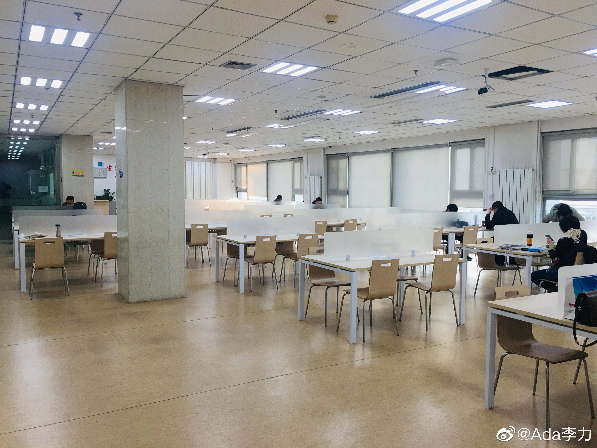
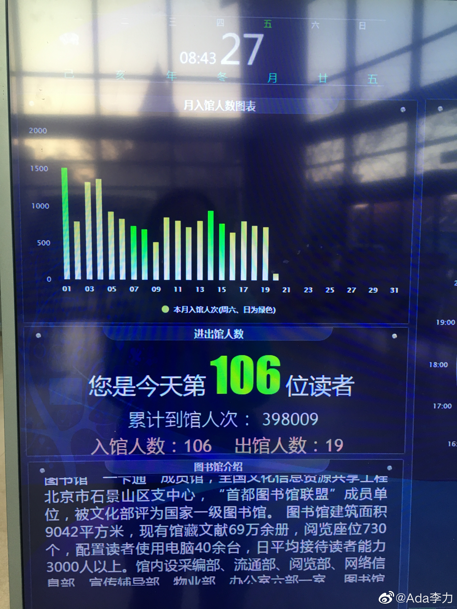

Ada李力
2019-12-21


Ada李力
2019-12-21

@Ada李力:
#创业#
计划把住处附近北京的公共设施了解下，看能否为自己所用，先去了最近的石景山区图书馆，最想了解的是把图书馆当办公场所，是否可行。
看起来可行，有专门的学习室，阅览室环境也可以，位置看起来有富裕。而且，图书馆有国企作风，每层都有开水房。让人感觉到现代些的，是还有母婴室。早晨我还看到有外卖送麦当劳到学习室门口。
拿身份证就可以免费办理借阅证，押金50元，每次可以借五本。最关键的是，貌似除了国家图书馆，各区图书馆借书和还书都已经联网，便利了很多。我好像从学校毕业后，就再没去过图书馆了呢，想看书就自己买，总觉得借书还书很麻烦。
但图书馆承载的不仅仅是图书借阅功能，做得好的图书馆，是个文化中心。常去转转还是很好的。
计划把住处附近北京的公共设施了解下，看能否为自己所用，先去了最近的石景山区图书馆，最想了解的是把图书馆当办公场所，是否可行。
看起来可行，有专门的学习室，阅览室环境也可以，位置看起来有富裕。而且，图书馆有国企作风，每层都有开水房。让人感觉到现代些的，是还有母婴室。早晨我还看到有外卖送麦当劳到学习室门口。
拿身份证就可以免费办理借阅证，押金50元，每次可以借五本。最关键的是，貌似除了国家图书馆，各区图书馆借书和还书都已经联网，便利了很多。我好像从学校毕业后，就再没去过图书馆了呢，想看书就自己买，总觉得借书还书很麻烦。
但图书馆承载的不仅仅是图书借阅功能，做得好的图书馆，是个文化中心。常去转转还是很好的。

- 

- 